TURN IN: Areal Interpolation with QGIS: Santa Clara County Population by Fire Hazard Risk Level
Overview
In this lab, you will use areal interpolation to estimate how many people live in each Fire Hazard Severity Zone risk class in Santa Clara County.
This lab is about manipulating geography to estimate a measurement that is not directly available to us.
In GIS, we are often interested in demographic values for units of area that are not based on Census geography. Fire hazard zones are a good example. They are meaningful analytical zones, but they are not the polygons the Census or SimplyAnalytics used to report population.
That creates a common problem: the population data and the geography we care about do not use the same boundaries.
In this exercise:
- the Fire Hazard Severity Zone polygons represent the hazard-risk geography
- the 2025 Santa Clara County block group population polygons represent the demographic reporting geography
Because those boundaries do not line up perfectly, we cannot just use a simple attribute join. Instead, we will use a simplified version of a very common GIS solution. We will split the source polygons where they intersect the target geography, calculate overlap-based weights, and use those weights to estimate population for the hazard zones.
In this lab, we will:
- calculate the original area of each block group
- split block groups where they cross Fire Hazard Severity Zone boundaries
- calculate the area of each resulting overlap polygon
- use an area-based weight to estimate how much of each block group's population belongs in each hazard polygon
- summarize the weighted population totals by hazard risk level
Concept note: Areal interpolation is a way of transferring attribute values from one set of polygons to another when their boundaries do not match. In this lab, we are using a simple area-weighting method, which assumes that population is distributed evenly within each block group.
Concept note: A more advanced and often more accurate method is to build the weight from the linear length of streets in the overlapping areas, rather than from polygon area alone. Street infrastructure often correlates more closely with population density, which helps reduce distortion from large but lightly populated spaces such as golf courses, industrial parks, or other land-extensive features.
Getting Ready
You will need:
- the Stanford EarthWorks Fire Hazard Severity Zone dataset: stanford-jr312mr8879
- Santa_Clara_Pop_2025.zip, a 2025 Santa Clara County block group shapefile exported from SimplyAnalytics
Create a new project folder for this lab. Download and unzip Santa_Clara_Pop_2025.zip into that project folder, then save a new QGIS project there as areal_interpolation_fire_hazard.qgz.
Data for This Exercise
Fire Hazard Severity Zones
Download the Fire Hazard Severity Zone dataset from EarthWorks and add the polygon layer to QGIS. In the EarthWorks download, the layer used in the screenshot is named fhszs06_3_43.
This dataset provides the target zones for your final summary. These are the polygons you want your estimated population totals to match.
From the attribute table shown in the screenshot, the key fields are:
HAZ_CLASSfor the hazard-risk class labels such asModerateHAZ_CODEfor the coded version of the classSRAfor the State Responsibility Area designation
2025 Santa Clara County Block Groups
Download and unzip Santa_Clara_Pop_2025.zip. Add santa_clara_pop_2025.shp, the block group shapefile exported from SimplyAnalytics.
This layer should contain:
- one polygon for each block group
- a field named
VALUE0, which stores# Total Population, 2025
Concept note: In this workflow, the block groups are the source zones because they hold the original population values, and the Fire Hazard Severity Zones are the target zones because they are the geography you want to report results for.
Before continuing:
- confirm that both layers draw in the same place
- confirm that both layers are polygon layers
- confirm that the population field in the block group layer is
VALUE0 - confirm that the hazard class field in the Fire Hazard Severity Zone layer is
HAZ_CLASS - note that
HAZ_CODEis available if you want to compare coded and text labels
If the two layers have different projected coordinate systems, reproject one so both layers use the same projected CRS before calculating area.
Concept note: Area-based calculations depend on the map units of the layer CRS. A projected CRS is important because it lets QGIS measure polygon area in consistent linear units such as feet or meters.
Part 1: Add the Layers and Inspect the Attributes
- Start a new QGIS project.
- Add the Fire Hazard Severity Zone layer from the EarthWorks download, such as
fhszs06_3_43. - Add
santa_clara_pop_2025.shpfrom the unzipped Santa_Clara_Pop_2025.zip folder. - Move the Fire Hazard Severity Zone layer above the block group layer if needed.
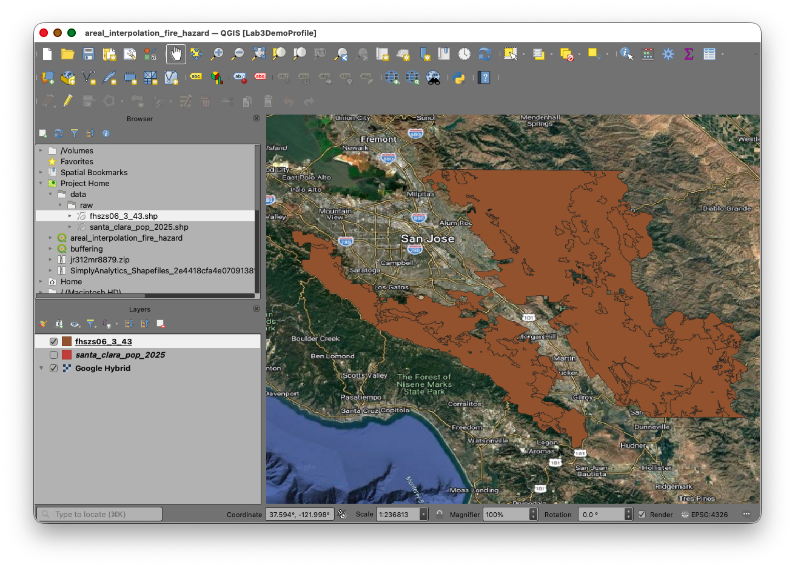
- Use the Layer Styling panel to make one of the polygon fills transparent so you can see both boundary systems at once.
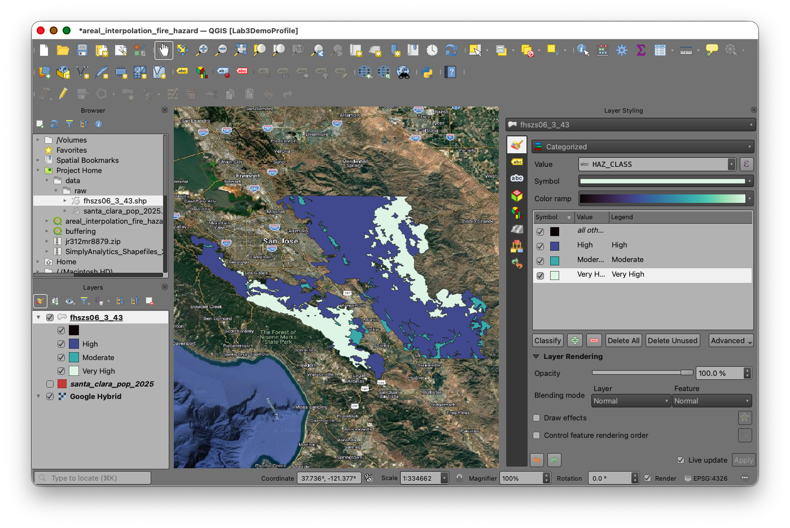
Take a moment to inspect the attribute tables of both layers.
You should identify:
- the block group unique identifier field
- the total population field for 2025:
VALUE0 - the Fire Hazard Severity Zone category field:
HAZ_CLASS - the optional coded hazard field:
HAZ_CODE
Part 2: Calculate the Parent Area of Each Block Group
We first need the original area of each intact block group polygon. This gives us the denominator for the weighting step later.
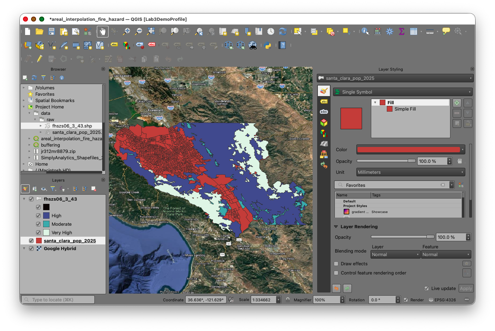
- Open the attribute table for the block group layer.
- Open the Field Calculator.
- Create a new field named
P_AREA. - Set the output field type to Decimal number (real).
- Use the expression:
$area
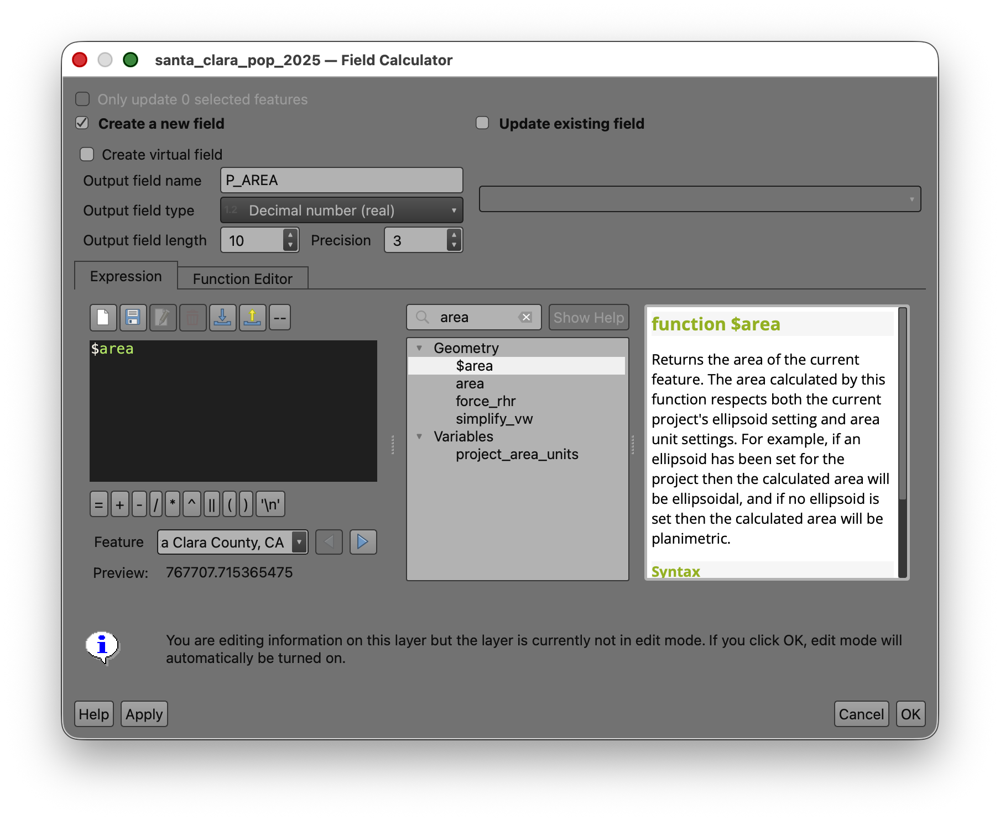
- Run the calculation.
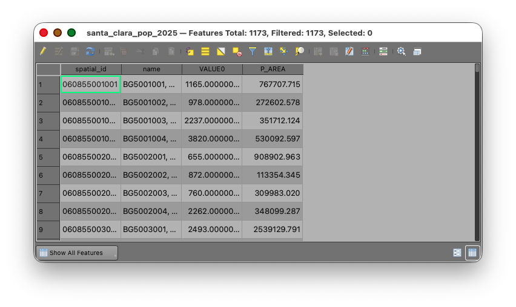
- Toggle of editing and Save your edits.
Concept note:
P_AREAstands for parent area, meaning the area of the original unsplit source polygon before any overlay operation happens.
If your population field contains whole-number totals, leave that field unchanged. The weighted population field later in the workflow should be stored as a decimal number.
Part 3: Use Union to Split Block Groups by Fire Hazard Severity Zone
Now create the overlap geometry that makes the interpolation possible.
- Open the Processing Toolbox.
- Search for Union.
- Use the Fire Hazard Severity Zone layer as the Input layer.
- Use the block group population layer as the Overlay layer.
- Save the output as
fhsz_union.shp. - Run the tool.
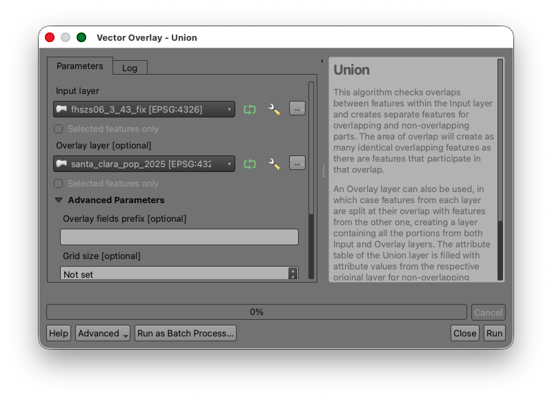
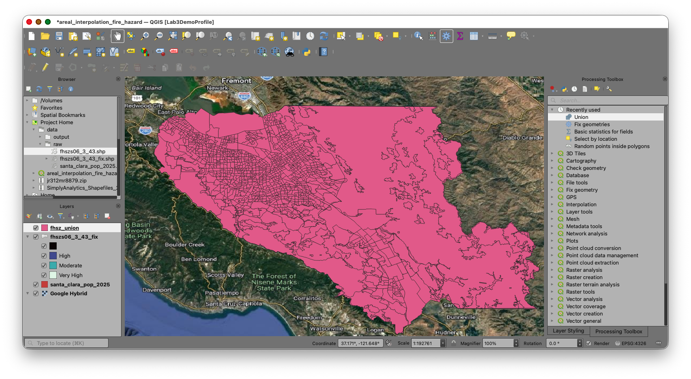
The result should be a new polygon layer containing:
- the Fire Hazard Severity Zone attributes
- the block group attributes
- one feature for each area created where the two boundary systems intersect
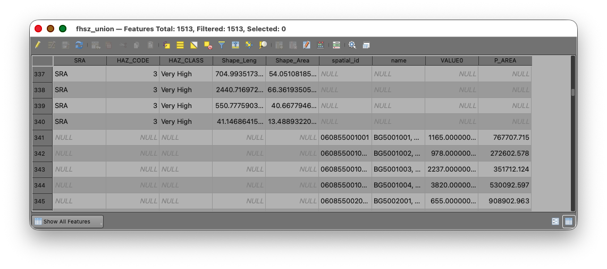
Concept note: The union step creates the new analytical units used in the interpolation. Any block group that crosses a hazard boundary will be divided into smaller child polygons.
Part 4: Calculate the Child Area of the Overlap Polygons
Now calculate the area of each new polygon in the union layer.
- Open the attribute table for
fhsz_union. - Open the Field Calculator.
- Create a new field named
CH_AREA. - Set the output field type to Decimal number (real).
- Use the expression:
$area
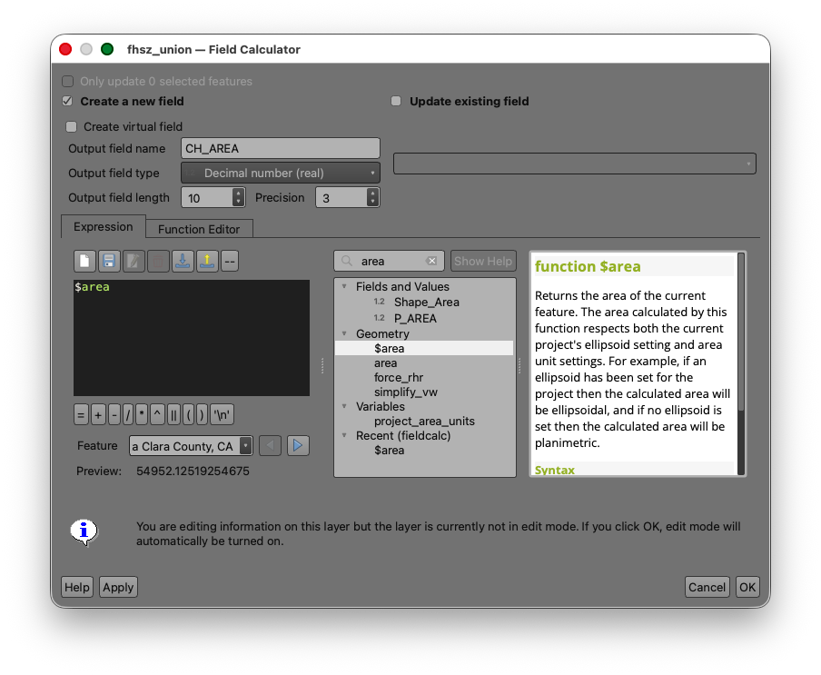
- Run the calculation.
Concept note:
CH_AREAstands for child area, meaning the area of each smaller overlap polygon created after the source block groups were split.
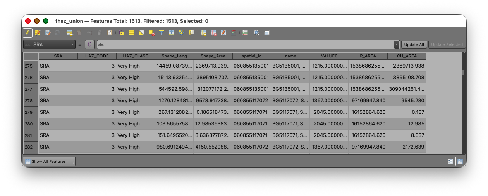
Part 5: Exclude Records with Null Parent Area
As in the Week 04 watershed interpolation lab, some polygons in the union result may not represent valid source block-group pieces for the weighting step.
"P_AREA" IS NULL
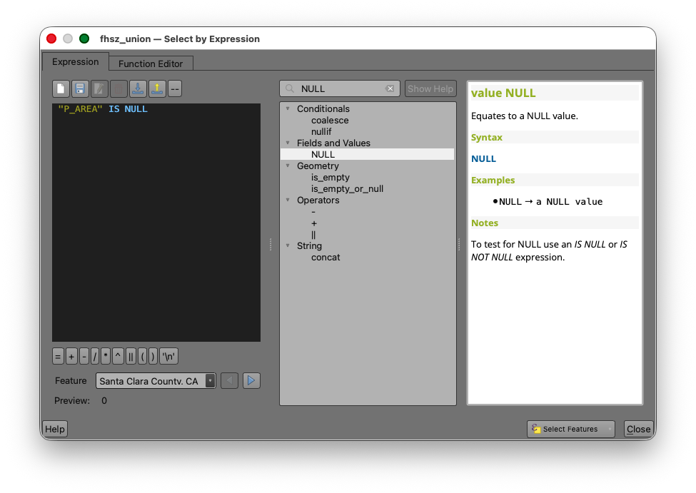
- Apply the selection.
- Inspect the selected features on the map.
- Invert the selection so that the selected records are the polygons where
P_AREAIS NOT NULL.
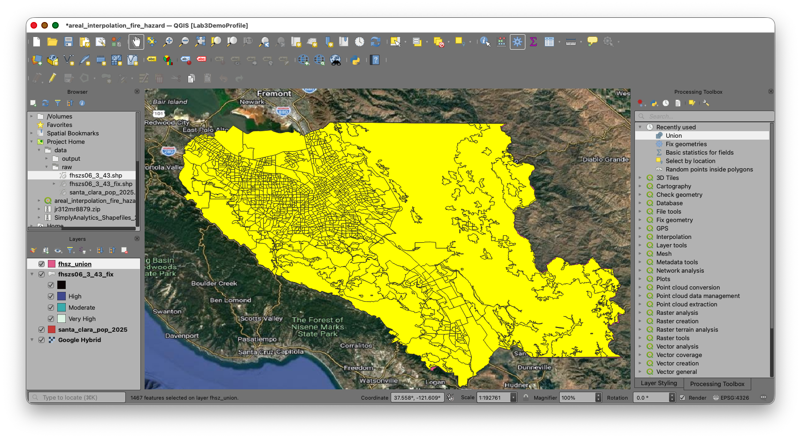
Concept note: This step protects the weighting calculation from null parent-area values. If a record does not have a valid original block-group area, it should not be used in the area-share calculation.
Part 6: Calculate the Area Weight
Now calculate the proportion of each child polygon relative to its original parent block group.
- With the non-null records still selected, open the Field Calculator for the union layer.
- Create a new field named
WEIGHT. - Set the output field type to Decimal number (real).
- Set a precision that will preserve several decimal places.
- Use the expression:
"CH_AREA" / "P_AREA"
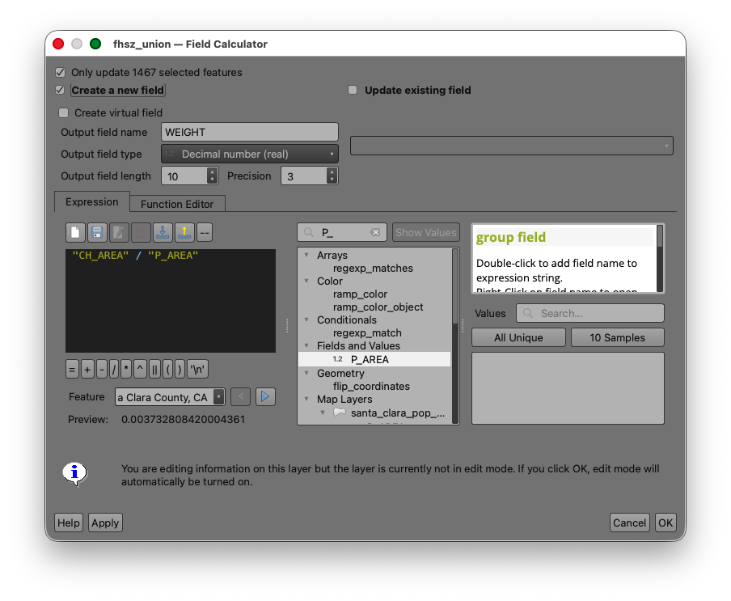
- Confirm Only update selected features is checked.
- Run the calculation.
- Toggle off editing.
Inspect several records after the calculation:
- values close to
1usually indicate a block group piece that stayed mostly intact within a single hazard zone - smaller values indicate that the original block group has been split across multiple zones
Concept note: The weight is the fraction of the original block group area represented by each overlap polygon. The workflow uses that fraction as a proxy for the fraction of the block group's population assigned to that overlap area.
Part 7: Calculate Weighted Population
Now apply the area weight to the 2025 block group population values.
- Open the Field Calculator for the union layer.
- Create a new field named
WT_POP. - Set the output field type to Decimal number (real).
- Use the expression:
"WEIGHT" * "VALUE0"
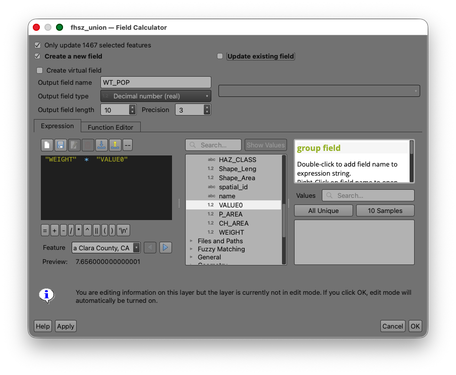
- Run the calculation.
- Toggle off editing and save your edits.
Concept note:
WT_POPis the estimated share of the original block group population assigned to each overlap polygon. When all overlap polygons from one original block group are added together, the result should be approximately that block group's original population total.
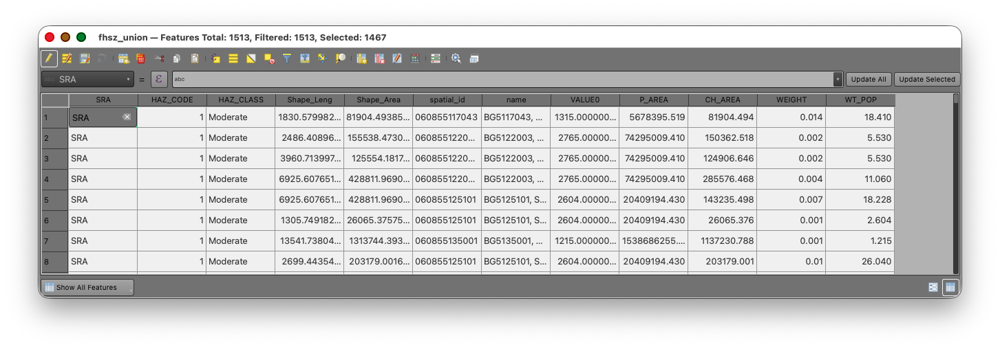
Part 8: Summarize Population by Fire Hazard Risk Level
Now that each overlap polygon has an estimated population, summarize those weighted values by Fire Hazard Severity Zone risk class.
Statistics by Categories
- Search for Statistics by categories in the Processing Toolbox.
- Use the union layer as the input table.
- Use
WT_POPas the field to calculate statistics on. - Use
HAZ_CLASSandHAZ_CODEas the category fields.
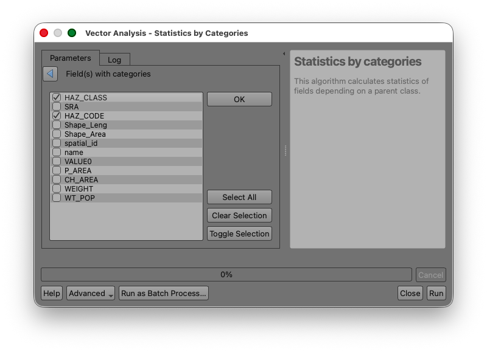
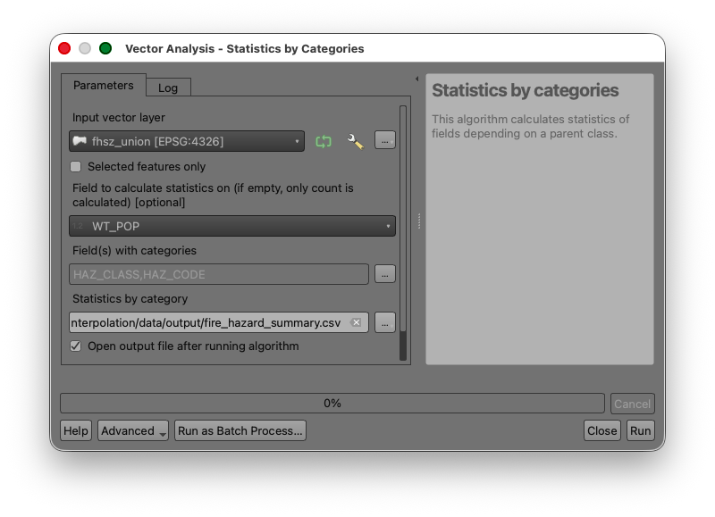
- Run the tool.
Your output table should show an estimated total population for each hazard risk class, such as Moderate, High, and Very High, under the SUM column.
Concept note: This final table is where the interpolation becomes useful. The intermediate polygons are only a method. The real goal is the summarized estimate by the target geography.
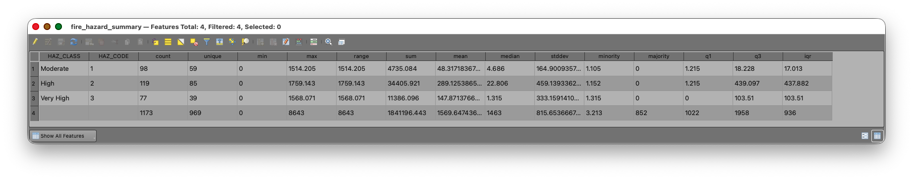
Deliverable
Prepare and submit:
- a screenshot of your final summary table showing estimated population by Fire Hazard Severity Zone risk level
- a short written response identifying which
HAZ_CLASScontains the largest estimated population - a short written response explaining, in one or two sentences, why areal interpolation was necessary for this analysis
If your instructor requests a map, create a simple layout that includes:
- the Fire Hazard Severity Zone polygons
- the block group boundaries or the union layer
- a title
- your name
- the date
What You Should Understand After This Lab
By the end of this exercise, you should be able to explain: